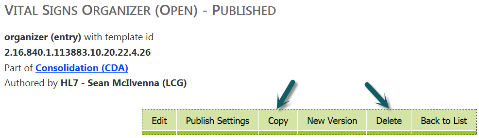
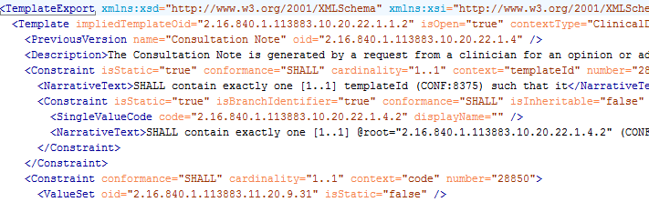
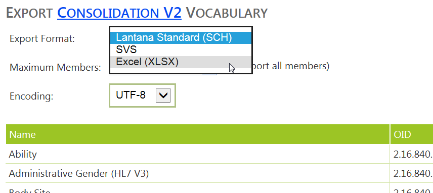

Released on Friday, October 11, 2013
The Trifolia development team has implemented new technology so the tool will perform with increased response times and behave in a more user-friendly manner, particularly as its user-base grows. Users may notice that Trifolia’s interface is migrating to a new application framework. As this migration occurs, menus, popups, and grids may look slightly different, they will, however, remain functionally the same.
Lantana is working with HL7 to release an “HL7 Member Write-Enabled” version of the tool. This new version will allow HL7 members to develop templates within Trifolia. The team has focused their QA efforts on security and auditing to ensure that when HL7 members begin to develop templates, they will not impact existing ones.
Users now have the ability to quickly navigate between different templates while working in the template editor. There is a new drop down menu in the template editor that lists all the templates the user has access to. This can be filtered by typing in the text box of the drop-down menu, and selecting the ’Edit’ button.
Several buttons have been moved from the implementation guide and template list screen to the ‘View Implementation Guide’ and ‘View Template’ screens.

In the last release, versioning implementation guides in Trifolia was made easier due to the ‘New Version’ button on the ‘View Implementation Guide’ screen. This release includes a similar functionality for templates. There is now a ‘New Version’ button on the ‘View Template’ screen. This automatically copies the templates into the new version of the implementation guide, and links the template with its old version. There is no longer a need to do this manually.

The ‘Publish Settings’ screen for templates now includes more user-input validation. For example, Trifolia will warn the user before saving a template sample without a name.
Historically there has been a wait for other working groups to establish a standard template exchange format before an XML format could be provided. However, given the demand for access to computable template definitions, the Trifolia team has created a proprietary format which may be used until a standardized format is established. Users can now export their templates to XML via the ‘Export’ screen.
In addition, Trifolia has a new ‘Excel’ format for vocabulary exports. This option is available in the ‘Export Format’ drop-down menu in the ‘Export Vocabulary’ settings screen.


In this release, templates now have a ‘status’ in addition to the implementation guide status. When editing a template, a ‘Status’ field is available to allow new versions of a template to indicate that it is deprecated.
The introduction of this status field provides the opportunity for Trifolia to make use of ‘Workflow’. Users can easily change the ‘Status’ of an implementation guide (and its associated templates) via a ‘Status’ drop-down menu on the ‘View Implementation Guide’ screen. Users may choose between ‘Draft,’ ‘Ballot,’ and ‘Published’ statuses.

Improvement |
Template Editing Navigation |
|
Improvement |
UI Validating Publish Info |
|
Improvement |
Consistent approach to end-user messaging |
|
Improvement |
Action Confirmations/Messages |
|
New Feature |
Template copying and versioning improvements |
|
New Feature |
IG File Management |
|
New Feature |
Simplifying Versioning IGs |
|
New Feature |
IG and Template Status |
|
New Feature |
Export templates to XML |
|
New Feature |
Export Vocabulary Spreadsheet |